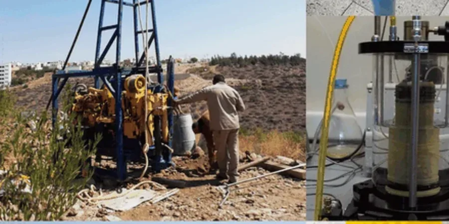

Our Gatineau office delivers comprehensive geotechnical services across the Outaouais region, supporting projects from residential subdivisions to institutional facilities. We provide full-spectrum site characterization, foundation design, subsurface investigation, and construction monitoring, ensuring each project meets local regulatory requirements. By combining field investigation techniques with calibrated laboratory testing, we produce code-compliant geotechnical reports that address Gatineau's unique subsurface conditions. Our team coordinates closely with local contractors and municipal authorities to streamline approvals and mitigate risks. Whether for shallow foundations, deep foundations, or earthworks, we apply consolidated regional experience to deliver reliable, cost-effective solutions. Learn more about our undisturbed sampling methods for accurate soil analysis.

Scope of work in Gatineau
Demonstration video
Typical technical challenges in Gatineau
Our team brings consolidated regional experience to Gatineau projects, having worked extensively with Champlain Sea clays and the area's glacial deposits. We operate a calibrated laboratory equipped for advanced triaxial testing and consolidation tests, ensuring accurate soil parameters for design. By maintaining close coordination with local contractors, municipal planners, and regulatory bodies, we expedite project timelines and ensure compliance with Quebec's stringent geotechnical standards. We also stay current with evolving NBCC provisions and ASTM protocols, guaranteeing that every report and recommendation is both reliable and defensible. For specialized treatments, explore our lime cement stabilization services for improving problematic soils.
Our services
Frequently asked questions
What are the typical foundation challenges in Gatineau's Champlain Sea clay?
Champlain Sea clay is sensitive and can lose strength when disturbed, leading to settlement or bearing capacity failures. Shallow foundations may require soil improvement or deep foundations to reach competent strata. Groundwater management is critical due to shallow water tables. Our site-specific investigations assess clay sensitivity, consolidation behavior, and strength parameters to recommend appropriate foundation solutions.
How does seismic activity in the Western Quebec Seismic Zone affect geotechnical design in Gatineau?
The region is classified as moderate seismic hazard under NBCC 2020. Soft clay deposits can amplify ground motions and increase liquefaction potential in sandy layers. We perform site-specific seismic response analyses, including shear wave velocity measurements and cyclic triaxial tests, to determine design spectra and mitigate earthquake risks for structures and slopes.
What regulatory permits are required for geotechnical investigations in Gatineau?
Geotechnical investigations typically require a permit from the City of Gatineau for drilling on public property, plus approval from the Quebec Ministry of the Environment for groundwater extraction or disposal. We handle all permitting and ensure compliance with provincial guidelines for soil and groundwater sampling, borehole abandonment, and disposal of drilling fluids.
How long does a typical geotechnical investigation take for a new residential development in Gatineau?
For a standard residential subdivision, a geotechnical investigation including boreholes, laboratory testing, and report preparation usually takes 4 to 6 weeks. Larger commercial projects may require 8 to 12 weeks due to additional testing and analysis. Timelines depend on site access, weather, and the complexity of subsurface conditions.